Version: 2.0 · Last updated: June 2026
Analyser is a browser-based tool for inspecting and comparing .fit activity files from Garmin devices and other ANT+ sensors. It runs entirely in your browser — no account, no upload, no server. Files are parsed locally.
Open Analyser in your browser. You are greeted with the landing page, which contains a drop zone and a file picker.
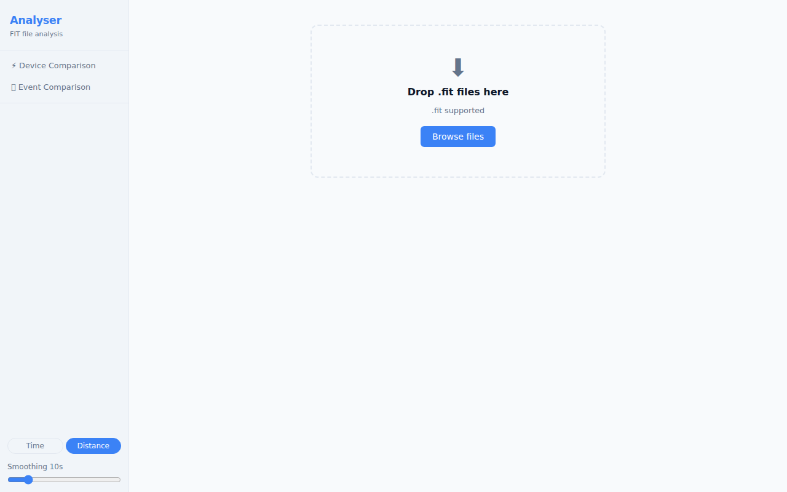
To load a file:
.fit files onto the drop zone, orYou can load up to 6 files at once. Once the files are parsed, you are taken directly to the Device Comparison view.
Supported format:
.fit(Flexible and Interoperable Data Transfer — the standard format exported by Garmin watches, Wahoo computers, and most ANT+ devices). Files from.tcxand.gpxsources are not currently supported.
After loading a file, the application has two main views:
| View | What it shows |
|---|---|
| ⚡ Device Comparison | Sensor streams from one or more files displayed side-by-side on a shared time or distance axis |
| 🏃 Event Comparison | Two or more runs of the same course aligned by distance, showing where time was gained or lost |
The Device Comparison view (described in sections 3–4) is the primary view and opens automatically when you load a file.
On a desktop browser, the two views are accessible from the left sidebar. Click ⚡ Device Comparison or 🏃 Event Comparison to switch modes.
On a tablet or phone, the sidebar is hidden by default. Tap the ☰ menu button in the top-left corner to slide out the navigation drawer. Tap any item or tap outside the drawer to close it. You can also swipe left across the drawer to close it.
On a phone (narrow screen), a bottom navigation bar appears at the foot of the screen with the same ⚡ Device and 🏃 Event buttons for quick switching without opening the drawer.
On tablet and phone, the toolbar controls (Device Toggle Bar, Channel Toggle Bar, Fine-tune timing) are hidden behind a collapsible panel. Tap the Devices & Options (or Channels & Options) button to expand or collapse the controls. On desktop the controls are always visible.
The Theme control is in the bottom of the sidebar (or navigation drawer), between the X-axis toggle and the Smoothing slider.
| Option | Behaviour |
|---|---|
| 🖥 Sys (default) | Follows your operating system's dark/light preference |
| ☀ Lit | Forces the light theme regardless of OS setting |
| 🌙 Drk | Forces the dark theme regardless of OS setting |
Your choice is saved in your browser and restored the next time you open Analyser.
Loading a single file opens the Device Comparison view with all detected sensor streams active.
The view is divided into:
The Device Toggle Bar sits at the top of the content area and lists every sensor stream detected in the loaded file.
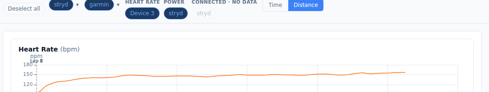
Key concepts:
Data quality warnings:
When Analyser detects sensor anomalies (signal spikes, data dropouts, or GPS drift), a red ⚠ N badge appears next to the affected channel label, where N is the number of anomaly events detected. Hover the badge to see a breakdown (e.g. "2 spikes, 1 dropout"). If GPS position anomalies are detected, a separate GPS ⚠ N section appears at the bottom of the bar. See section 3.2 for anomaly markers on charts and section 3.5 for GPS drift circles on the map.
Renaming a device:
Double-click any device pill to rename it. Type the new label and press Enter to confirm, or Escape to cancel. Labels are saved locally in your browser and are restored automatically the next time you load a file from the same device — this works for all device types, including Garmin watches, Stryd pods, ANT+ sensors, and BLE devices.
The Charts tab displays time-series data for every active channel.
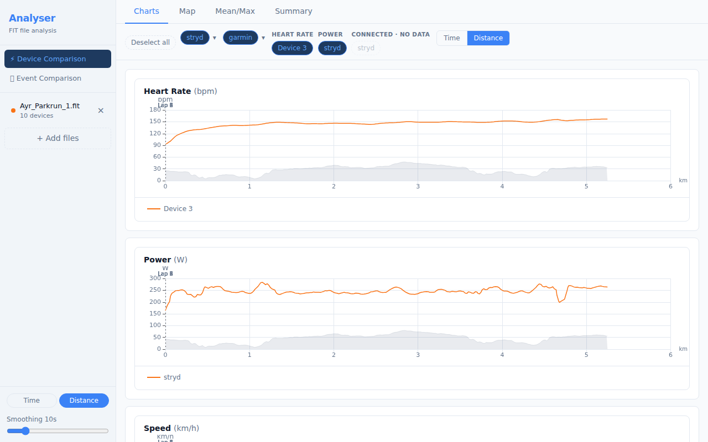
Reading the charts:
Interacting with the charts:
| Action | Effect |
|---|---|
| Hover | Tooltip shows exact values across all series at that position |
| Click + drag | Zoom in on a time/distance range |
| Double-click | Reset zoom |
| Scroll wheel | Zoom in/out (all charts stay synchronised) |
Lap markers appear as faint vertical lines across all charts. Hover a marker to see the lap number and split time.
Per-series statistics:
Below each chart, a compact stats row shows the minimum, average, and maximum for every active device series:
max / avg / min. Numbers still read ascending left-to-right.Note: Stats in this row reflect the current smoothing and axis mode (distance or time) and may differ slightly from the Summary tab, which uses the raw unsmoothed data from the original file.
Data quality markers:
When Analyser detects sensor anomalies in the active channel, red ◆ diamond markers appear on the chart at the positions where anomalies occurred. These highlight:
Click a diamond marker to zoom the chart to ±15 seconds (or ±50 metres in distance mode) around the anomaly, making it easy to inspect the surrounding data in context. Double-click the chart to zoom back out.
GPS drift anomalies (where the GPS signal jumped to an implausible position) are shown on the Map tab as red circles, not on time-series charts.
Smoothing:
A smoothing control lets you apply a rolling average to reduce sensor noise. Increase the window (in seconds) to smooth out spikes; set it to 1 s for raw data. Smoothing applies to all channels simultaneously.
The Summary tab shows aggregate statistics for every active device and channel.
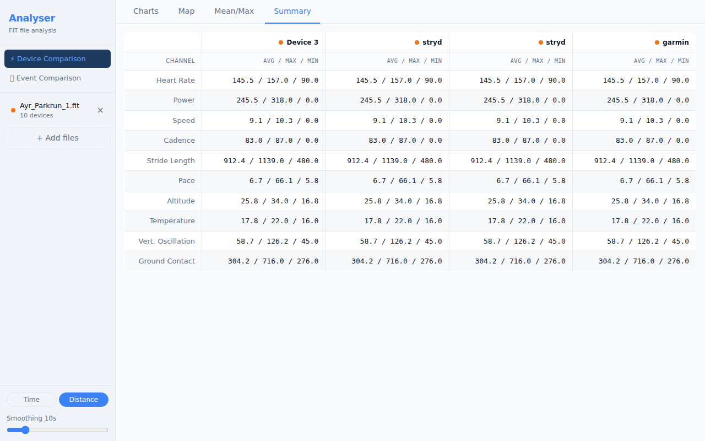
For each channel, the table shows:
| Column | Meaning |
|---|---|
| Device | The sensor that recorded this channel |
| Avg | Time-weighted average over the active portion of the activity |
| Max | Peak value recorded |
| Total | Cumulative value (distance, calories) — shown where applicable |
Toggling devices in the Device Toggle Bar updates the Summary table immediately.
The Mean/Max tab plots the best average power (or other metric) over every possible duration, from one second up to the full activity length.
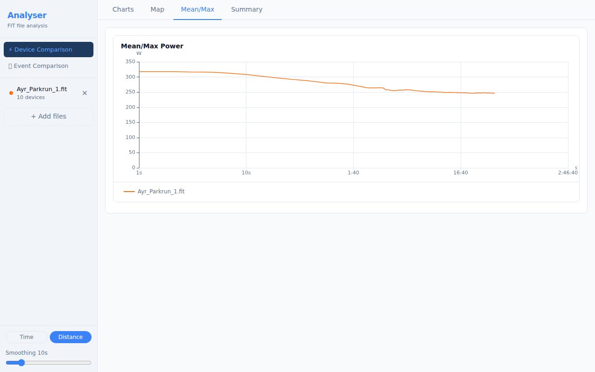
This is the standard "Critical Power curve" or "Power Duration curve" used in cycling and running:
The Map tab renders the GPS route recorded in the activity.
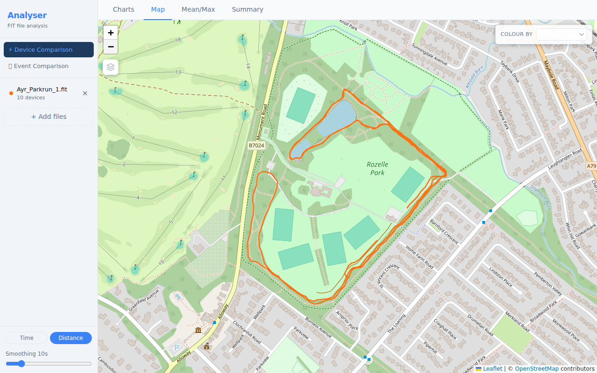
Tile layers:
A Map Layer panel is always visible in the top-left corner of the map. Click any layer name to switch the base map:
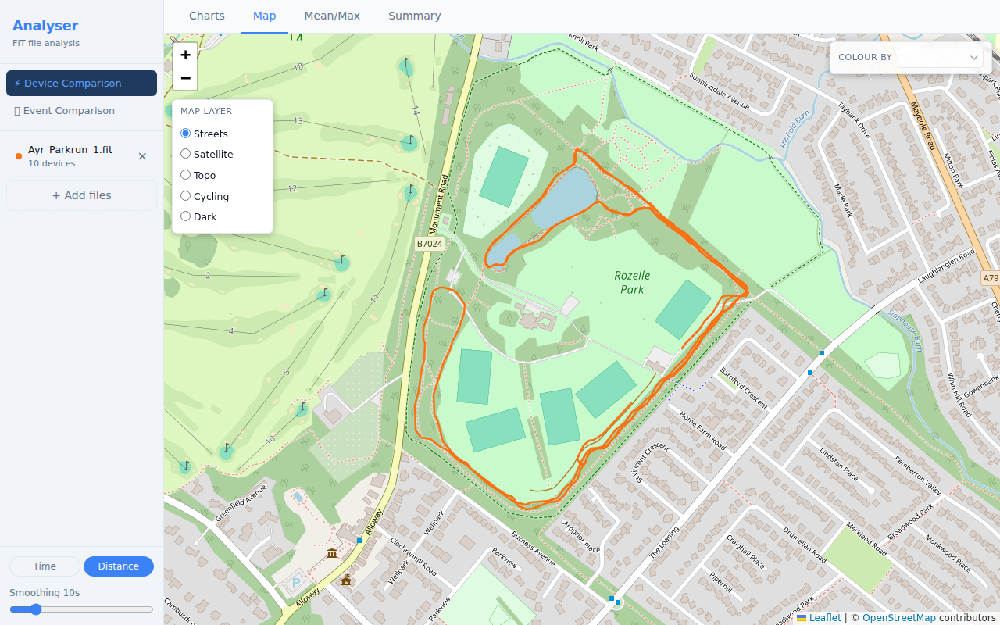
| Layer | Best for |
|---|---|
| Streets (default) | Road runs, orientating yourself |
| Satellite | Seeing the actual terrain |
| Topo | Hilly routes — contour lines visible |
| Cycling | Bike-specific road markings |
| Dark | Low-glare, high-contrast viewing |
GPS drift indicators:
If Analyser detects GPS position anomalies (points where the GPS signal jumped to an implausible location), small red circles appear on the map route at those positions. Hover a circle to see the implied speed that triggered the detection. These markers help you identify segments where GPS accuracy was poor, so you can discount those portions of the route.
Metric colouring:
Use the Colour by dropdown in the top-right of the map to shade the route by a metric such as pace, heart rate, or power. The colour gradient runs from blue (low values) to red (high values). A legend appears in the bottom-right showing the value range.
Metric strip chart:
When you select a metric in the Colour by dropdown, a strip chart slides in below the map showing that channel's values plotted against distance. The strip chart occupies approximately 30% of the map panel height; the map retains the remaining 70%.
Bidirectional hover sync:
The map and strip chart are linked in both directions:
Hover interaction (Charts tab):
Hovering over the map route also shows a crosshair on all open Charts-tab charts, letting you pinpoint exactly what your metrics were at a specific GPS location.
Analyser supports loading up to 6 files simultaneously, enabling you to compare sensor data across different activities or devices.
Select multiple .fit files in the file picker (hold Shift or Cmd/Ctrl to select more than one), or drag and drop multiple files onto the drop zone at once.
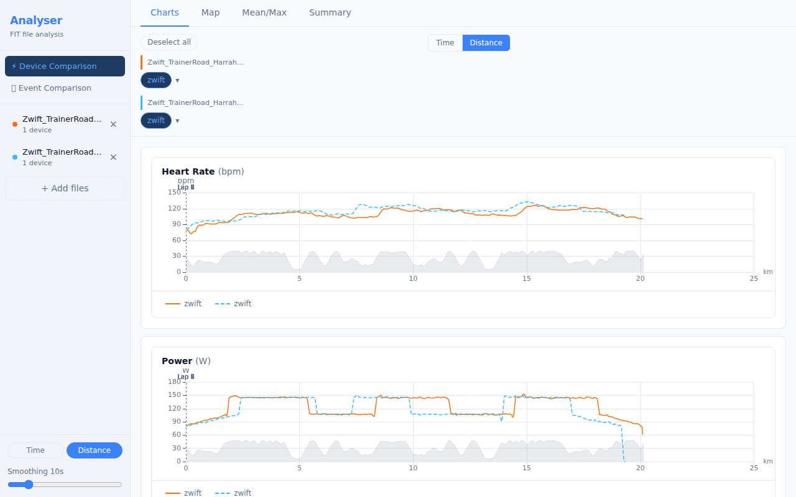
Note: If the loaded files are from different sessions (start times more than 1 hour apart), Device Comparison will be unavailable — see section 4.2.
Device Comparison is designed for files recorded during the same session — for example, two devices worn simultaneously on the same run. Comparing files from completely different activities (different days, different events) produces charts with no meaningful relationship between the data streams.
If you load two or more files whose start times are more than 1 hour apart, Analyser detects this and shows an explanation panel instead of charts:
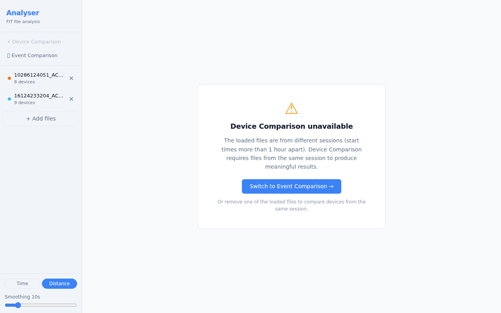
The ⚡ Device Comparison button in the sidebar also appears greyed-out with a tooltip explaining why it is unavailable.
What to do:
Once the remaining files overlap in time (within 1 hour), Device Comparison becomes available again automatically.
In multi-file mode the Device Toggle Bar groups sensors by their source file, with a coloured left-border header for each file.
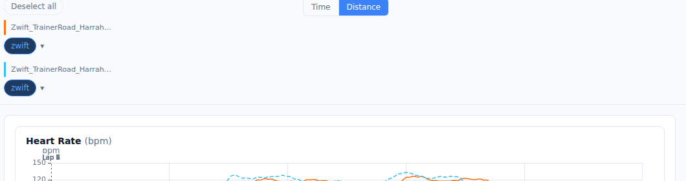
Even when files are from the same session, GPS clocks sometimes drift by a few seconds. The Fine-tune timing control lets you shift any file forwards or backwards in time to align the traces precisely.
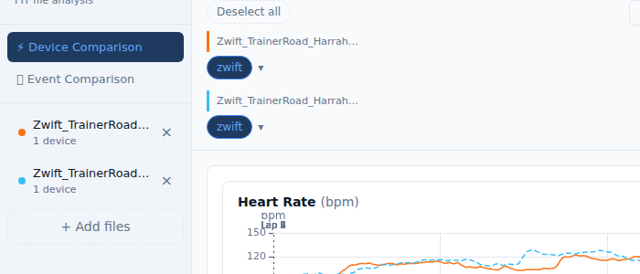
Click the ⏱ Fine-tune timing button (below the Device Toggle Bar, visible in multi-file + time-axis mode) to expand the panel. This control is only relevant when files are from the same session — if they are from different sessions, the gate panel is shown instead (see section 4.2).
| Control | Function |
|---|---|
| −10 / −1 buttons | Shift the file 10 s or 1 s earlier |
| +1 / +10 buttons | Shift the file 1 s or 10 s later |
| Numeric input | Type an exact offset in seconds |
| ↺ (Reset) | Return to the GPS-anchored auto-computed offset |
The first loaded file is always the reference (offset = 0). All other files are shifted relative to it. The offset is shown in the N adjusted badge on the toggle button.
Anchor source badge:
Next to each filename in the expanded panel, a small coloured badge shows how Analyser determined the auto alignment for that file:
| Badge | Colour | Meaning |
|---|---|---|
| Timer | Blue | Aligned to the FIT timer-start event — highest accuracy |
| GPS move | Blue | Aligned to the first GPS record with movement — typical outdoor |
| GPS fix | Amber | Aligned to the first GPS fix (stationary) — slightly less precise |
| File start | Grey | No GPS and no timer — aligned by file start time only |
| Workout | Green | Aligned to the first structured workout step (indoor) |
| Indoor | Green | Aligned to the first movement detected (speed/power/cadence) |
Blue and green badges indicate good-quality alignment. An amber or grey badge on one file while others are blue or green may explain a small residual offset — use the nudge buttons to correct it.
Location mismatch warning:
If Analyser detects that the GPS start points of the loaded files are more than 50 m apart, an amber banner appears at the top of the charts area:
⚠ GPS anchor points are more than 50m apart — these files may be from different locations. Distance comparison may not reflect a shared course.
This can occur if you accidentally loaded files from two different events. Dismiss the banner with the ✕ button, or remove the mismatched file from the sidebar.
Indoor and mixed-session warnings:
When Analyser detects that some or all of the loaded files are indoor activities (turbo trainer, treadmill, Zwift, TrainerRoad), it shows one of two banners:
| Situation | Banner | Effect |
|---|---|---|
| Indoor + outdoor files loaded together | ⚠ Amber warning | Distance mode disabled — the Distance button is greyed out with a tooltip. The axis switches to Time automatically. |
| All files are indoor (2+ files) | ℹ Blue info | Informational only — distance comparison still works but values are device-estimated, not GPS-measured. |
Both banners are dismissible and reset automatically when you change the loaded files.
The Event Comparison view (🏃) is designed for comparing multiple runs of the same course — for example, several parkruns on the same route — aligned by distance to show exactly where time was gained or lost.
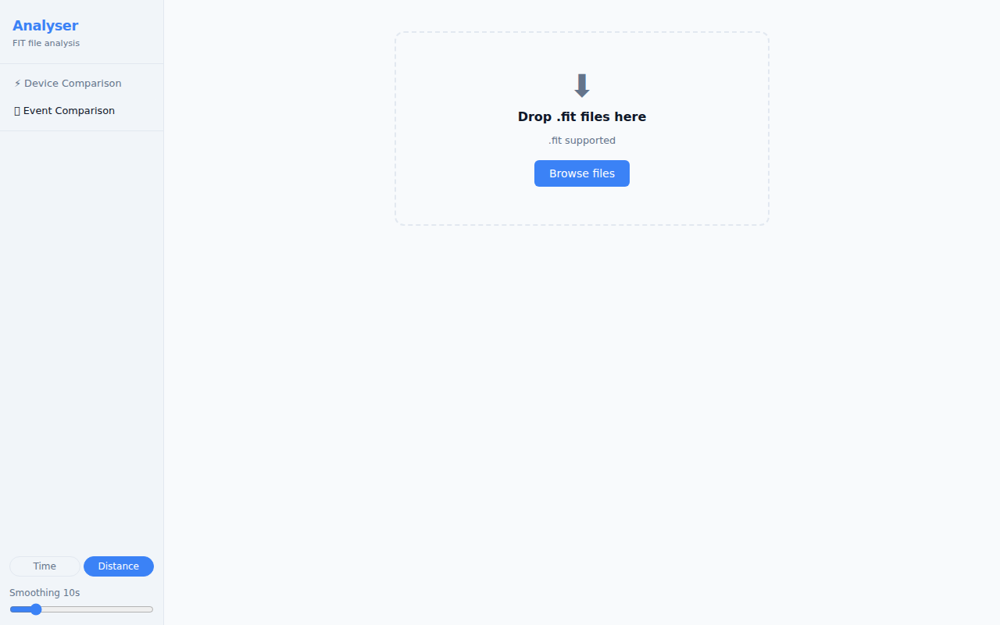
Load two or more .fit files, then switch to the Event Comparison tab. The view provides:
Tip: Select a reference run using the controls in the sidebar. The time delta is calculated relative to the reference. Try different reference runs to understand where you consistently gain or lose time.
Analyser can export your loaded activity data in three formats: a CSV file, an Excel workbook, and PNG screenshots of individual charts.
The tab bar on both the Device Comparison and Event Comparison pages contains a CSV / Excel format toggle and an Export Data button. CSV is selected by default.
Clicking Export Data with CSV selected downloads a plain-text .csv file immediately — no server involved.
File structure:
activity column (the source filename) is prepended as the first column so rows can be filtered by file in any spreadsheet tool.Columns:
| Column | Description |
|---|---|
activity |
Source filename — only present when multiple files are loaded |
Timestamp |
ISO 8601 date-time of the sample (e.g. 2026-01-15T09:00:00.000Z) |
Elapsed (s) |
Seconds since activity start |
Distance (m) |
Cumulative distance in metres |
| (channel columns) | One column per channel with at least one non-null value across all loaded files |
The same channel columns as Excel apply: Heart Rate (bpm), Power (W), Cadence (rpm), Speed (km/h), Pace (min/km), Altitude (m), Temperature (°C), and others where available. Channels with no data in any loaded file are omitted. Pace values are formatted as M:SS strings (e.g. 5:15).
The file uses RFC 4180 formatting: CRLF line endings, quoted fields where values contain commas or quotes.
Downloaded filename: analyser-export-YYYY-MM-DD.csv using your local date.
Select Excel in the format toggle, then click Export Data to download an .xlsx workbook — no server involved.
Workbook structure:
| Sheet | Contents |
|---|---|
| Summary | One row per loaded file: filename, sport, start time, total distance (km), and elapsed time |
| Per-activity sheets | One sheet per file, named after the filename (truncated to 31 characters; duplicates are suffixed (2), (3), etc.) |
Per-activity sheet columns:
Each activity sheet contains one row per recorded data point with the following columns:
Channels with no data at all in a given file are omitted from that file's sheet. Pace values are formatted as M:SS strings (e.g. 5:15) rather than decimal numbers.
Downloaded filename: analyser-export-YYYY-MM-DD.xlsx using your local date.
Every chart card has a ⬇ PNG download button in its header row. Clicking it downloads a PNG screenshot of that chart at 2× pixel density for sharp rendering on high-DPI displays.
The PNG uses the chart's current theme (light or dark) as the background, so what you see is what you get.
Downloaded filenames follow the pattern channel-name-YYYY-MM-DD.png (e.g. heart-rate-2026-05-26.png).
PNG export is available for all four chart types: Time Series, Mean/Max, Time Delta, and Segment Bar.
Device labels you create (by double-clicking a sensor pill) are saved in your browser's local storage. The Sync feature lets you share those labels across multiple browsers or devices — for example, so your phone and laptop both show "Polar H10" instead of "Device 1".
Sync is automatic and account-free. No sign-in is required. Each browser is assigned a private sync identity (a UUID stored in local storage) the first time it loads Analyser.
Privacy note: Labels are stored in Upstash Redis and expire automatically after 90 days of inactivity. No personal information is stored — only the device labels you assign (e.g. "Polar H10", "Assioma Duo") keyed by a randomly generated UUID.
To share your labels with a second browser or device:
XXX-XXXXX, e.g. E6Y-NXEMF).After linking, both devices share the same sync identity and labels stay in sync automatically.
Tip: The QR code and copy-link methods are the most convenient. Use the short code when typing a URL isn't practical.
The Sync panel shows a status line:
| Status | Meaning |
|---|---|
| ☁ Syncing across devices ✓ · N min ago | Labels synced successfully; time since last sync |
| Setting up sync… | Initial sync in progress (first visit) |
| ⚠ Sync error — retry | A push or pull failed; click retry to try again |
Network errors are non-fatal — if a push fails, your local labels are unchanged and the error is shown in the panel. Analyser will retry automatically on the next label change.
If you want to break the link between devices (e.g. after lending your laptop to someone):
A new UUID is generated and your current labels are pushed under the new identity. Devices still using the old identity will no longer receive your label updates.
Note: Resetting does not delete the old identity from the cloud — it simply stops being used. The old data will expire after 90 days of inactivity.
| Action | How |
|---|---|
| Open Sync panel | Click ☁ Sync in the sidebar footer |
| Share labels with another device | QR code, Copy link, or short code |
| Enter a short code | Type XXX-XXXXX in the Link another device input and press → |
| Break the link / start fresh | Reset sync identity in the Sync panel |
| Check last sync time | Status line in the Sync panel |
| Key | Action |
|---|---|
| Double-click a chart | Reset zoom |
| Enter (in rename input) | Confirm device rename |
| Escape (in rename input) | Cancel device rename |
| Enter (in offset input) | Confirm time offset |
| Sensor | Channels recorded |
|---|---|
| Heart Rate Monitor (HRM) | Heart Rate |
| Power Meter (bike) | Power, Left/Right balance |
| Stryd Running Power | Power, Form Power, Ground Contact Time, Stride Length |
| Core Body Temperature | Core Temperature, Skin Temperature |
| Speed/Cadence Sensor | Speed, Cadence |
| Running Dynamics Pod | Vertical Oscillation, Ground Contact Time, Stride Length |
| Watch / Primary device | All remaining channels: GPS, Altitude, Speed, Pace, Temperature |
.fit (ANT/Garmin FIT protocol)| Symptom | Likely cause | Fix |
|---|---|---|
| File loads but no charts appear | No sensor data in the file | Check the Device Toggle Bar — all devices may be deselected or no-data |
| Device Comparison shows "unavailable" panel | Files are from different sessions (start times >1 hour apart) | Use Event Comparison (🏃) to compare runs of the same course, or remove the out-of-session file |
| Two same-session files don't align on the time axis | GPS clock drift between devices | Check the anchor source badges in Fine-tune timing (section 4.4); files with grey or amber badges may need a small manual nudge |
| Location mismatch warning appears | Files are from different GPS locations (anchors >50 m apart) | Check the files loaded — you may have mixed files from different events; dismiss the banner or remove the mismatched file |
| Map shows no route | FIT file has no GPS data | Some indoor activities (pure TrainerRoad, treadmill) do not record GPS. Zwift files do have a map (virtual route). |
| Distance button greyed out | Indoor and outdoor files loaded together | Distance axes are incompatible — use Time mode for this comparison, or load only one type of activity |
| "All files are indoor" banner appears | All loaded files are indoor activities | Informational only — distance comparison still works but is device-estimated. Dismiss or ignore. |
| Pace chart looks upside-down | Expected — faster pace (lower min/km) is plotted higher | This is correct; it matches the intuition of "going faster = higher on chart" |
| Device name shows as "Device N" | Device not yet labelled | Double-click the pill to rename it; the label is saved in your browser and restored for future sessions with any device of the same type |
| Sync panel shows "⚠ Sync error" | Network error or server unavailable | Click retry in the Sync panel; your local labels are unaffected |
| Short code entry says "Code not found" | Code is invalid, mistyped, or the 90-day TTL has expired | Check the code format (XXX-XXXXX) and re-copy it from the originating device |
| Labels on second device are out of date | Sync has not triggered yet | Open the Sync panel — pulling happens automatically on load; refresh the page if needed |
| Sync panel shows "Setting up sync…" for a long time | Connectivity issue on first visit | Check your network; the sync identity is assigned locally first so labels still work offline |
Screenshots taken using real activity files: Ayr Parkrun and Zwift/TrainerRoad sessions.